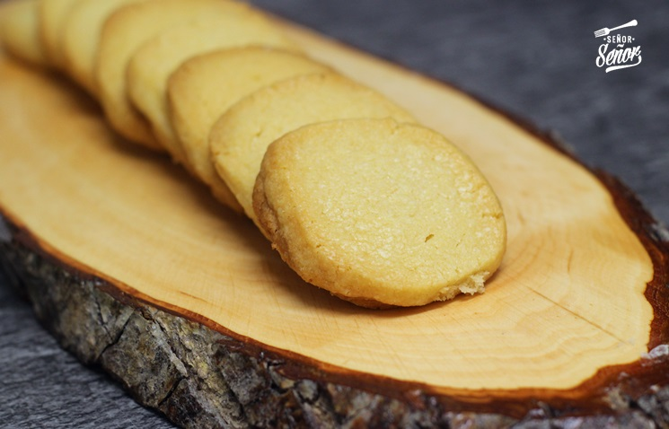

Galletas clásicas
Ingredientes
- 200 gramos mantequilla pomada (blandita a temperatura ambiente)
- 120 gramos azúcar
- 280 gramos de harina de trigo
- 1 cucharadita esencia de vainilla
Preparación
- En un bol comenzamos mezclando la mantequilla con el azúcar. Recordad que la mantequilla debe de estar a temperatura ambiente para poder trabajar bien con ella. Mezclamos muy bien.
- Una vez mezclado, agregamos la cucharadita de esencia de vainilla.
- Continuamos con la harina tamizada. Pasamos la harina por un colador antes de incorporarla al bol. Mezclamos muy bien.
- Ahora es momento de darles forma. Lo más fácil es hacer un rollito como veis a continuación con la ayuda de papel film y meterlo en la nevera durante 1 hora más o menos. A partir de ahí, lo que haremos sera “cortar rodajas” de 1 cm más o menos y hornearlas.
- Las ponemos en un bandeja de horno cortadas y las horneamos a 180º durante unos 11-12 minutos. En el momento que veamos que se empiezan a dorar los bordes las sacamos. Si veis que están blanditas no las dejéis más porque yo cometí una vez ese error, cuando se enfrían se endurecen. Así que no os preocupéis si tocáis alguna y la veis blanda.
Tortilla de patatas

Ingedirentes
- 1 kilo de patatas (Unas 5-6 dependiendo del tamaño)
- 6 huevos medianos si la queremos cuajada y 7-8 si la queremos jugosa.
- 2 cebollas grandes
- Sal
- Aceite de oliva virgen extra
Preparación
- Como he comentado antes empezamos pelando las patatas. Las lavamos y las cortamos con la ayuda del pelapatatas o de un cuchillo bien afilado y en rodajas de 2mm.
- Pelamos las cebollas y las pochamos a fuego muy lento en la sartén. Una vez tengamos la cebolla pochada retiramos y reservamos. Mucha gente lo hace todo a la vez, a mi me gusta hacerlo de manera separada.
- Ponemos abundante aceite en la sartén e introducimos las patatas. Aquí tenemos que freírlo a fuego muy lento evitando que se doren las patatas, digamos que se tienen que “cocer” en el aceite, por lo que lo tenemos que poner a fuego medio bajo.
- Una vez hechas las patatas y las cebollas las sacamos de la sartén y las ponemos en un colador para que suelten la mayor cantidad posible de aceite.
- Batimos los huevos. Una vez escurridas las mezclamos con los huevos batidos y mezclamos muy bien evitando que se cuaje por parte. En este paso rectificamos de sal.
- Es hora de hacer la tortilla, ponemos una gotita de aceite en una sartén e introducimos la mezcla de huevos y patatas. Vamos tocando con la cuchara de palo por los bordes haciendo la forma de la tortilla.
- Pasado 1 minutos le damos la vuelta con mucha seguridad y la ayuda de un plato mayor que la sartén donde estemos cocinando la tortilla. Volvemos a ponerla y seguimos haciendo la forma de la tortilla con la ayuda del cucharón. En 2 minutos estará lista.